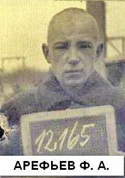
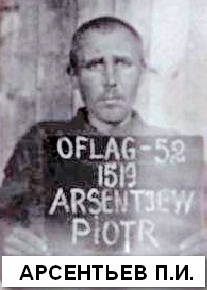
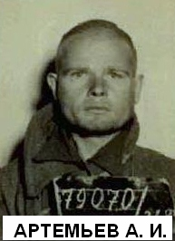
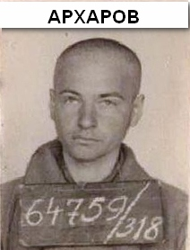

КНИГА ПАМЯТИ
(Продолжение)
В начале марта 2011 г. в Твери пройдет областной форум «Я патриот». Одним из вопросов, который предложил обсудить на этом мероприятии наш Фонд будет вопрос о возрождении работы в нашей области постоянно действующей редколлегии Книги Памяти Тверской области. Такие редколлегии существуют в большинстве боевых регионах России, да и не только боевых. У нас же она прекратила свое существование в 2002 году.
За прошедшие с тех пор восемь лет в отделах областного комиссариата, архивах поисковых отрядов, ветеранских и других общественных организаций появились сотни, если не тысячи имен погибших и пропавших без вести воинов, уроженцев нашей области, которых нет ни в одной Книге Памяти. Практически ежедневно в областную администрацию, военкоматы, да и в наш Фонд поступают письма с просьбами исправить некорректную запись в ныне существующую Книгу Памяти, дополнить ее новой записью, чтобы увековечить память о не вернувшемся с фронта солдате. Но выполнить эти просьбы невозможно: редколлегии нет, очередного дополнительного тома Книги Памяти издавать никто пока не планирует.
Кроме того, остаются не увековечены в Книгах Памяти имена наших земляков, погибших в локальных конфликтах, при исполнении интернационального долга, при выполнении служебных обязанностей по защите государственных интересов.
Предлагаем читателям нашей газеты, представителям администраций муниципальных образований высказать свое мнение по этому вопросу, а именно: нужна или нет у нас в области редколлегия Книга Памяти.
Свои предложения по этому вопросу просим направлять в наш адрес.
АРЕФЬЕВ Петр Фёдорович (медальон) родился в 1908 г. в г. Ржеве Калининской области. Семья: Козырева Федосья Егоровна, г. Ленинград, пер. Озерковский, д. 6, кв.4.
Призван Выборгским РВК г. Ленинграда. Рядовой. Найден: май 1990 г., Ленинградская обл., Кировский р-н, «Невский Пятачок». Захоронен: 1 мая 1990 г., г. Санкт-Петербург, Кировский р-н, мемориал «Невский Пятачок».
АРЕФЬЕВ Фёдор Алексеевич родился 15 июня 1920 г. в Калининской области. Крестьянин. Православный. Русский. Довоенный адрес: г. Калинин, ул. Равенства, д. 15. Матери Комаровой Анне.
В армию призван Центральным РВК г. Калинина. Рядовой 406-го стрелкового полка. Попал в плен 1 июля 1941 г. под Горохово. Регистрацию прошел в шталаге № 310 Витцендорф. Номер регистрации 12165. Погиб в лагере 24 марта 1942 г. Причина не указана. Похоронен в братской могиле на мемориальном лагерном кладбище советских военнопленных Витцендорф у п. Витцендорф, р-н Зольдау-Фаллингбостель, земля Нижняя Саксония.
АРИСТОВ Александр Иванович (медаль «За боевые заслуги» № 107195) родился в 1903 г. Семья: Калининская область, Кесовогорский р-н, д. Старово.
Призван Кесовогорским РВК, младший сержант, командир отделения 785-го стрелкового полка 144-й стрелковой дивизии. Найден: 1996г., Республика Беларусь, Витебская обл., Витебский р-н, д. Волосово. Захоронен: 1996г., Витебская обл., Витебский р-н, д. Копти.
АРМАШОВ Иван Михайлович родился 14 ноября 1907 г. в д. Губино Пеньевского с/с Нерльского (Калязинского) р-на Калининской области. Крестьянин. Православный. Русский. Жена Наталья Николаевна.
В армию призван Нерльским РВК. Рядовой в/ч 216. Попал в плен 25 июня 1941 г. в Литве. Регистрацию прошел в Восточной Пруссии, в шталаге I A Штаблак/Кляйн-Дексен Номер регистрации 4170. Погиб в лагере 8 июня 1942 г. Похоронен в братской могиле советских военнопленных на лагерном кладбище в п. Фурманово Багратионовского р-на Калининградской области.
АРСЕНЕНКОВ Яков Петрович родился 10 ноября 1905 г. в д. Паново Филюкинского с/с Бельского р-на Смоленской (Калининской) области. Крестьянин. Православный. Русский. Мать Морозова. Жена Анна.
В армию призван Бельским РВК. Рядовой 45-го стрелкового полка. Попал в плен 5 сентября 1941 г. под г. Черниговом на Украине. Регистрацию прошел в Верхней Силезии, в шталаге I B Хохенштайн. Номер регистрации 19960. Погиб в Восточной Пруссии, в шталаге I A Штаблак/Кляйн-Дексен 16 апреля 1942 г. Похоронен в братской могиле на лагерном кладбище советских военнопленных в п. Фурманово Багратионовского р-на Калининградской области.
АРСЕНЬЕВ Андрей Павлович родился 12 июля 1919 г. в д. Батурино Удомельского р-на Калининской области. Крестьянин. Православный. Русский. Мать Кудряшова. Отец Павел Д.
В армию на действительную службу призван Удомельским РВК в июне 1939 г. Рядовой-пехотинец. Попал в плен 3 июля 1941 г. под Минском в Белоруссии. Регистрацию прошел в шталаге № 310 Витцендорф. Номер регистрации 30280. Погиб в лагере 31 декабря 1941 г. Причина не указана. Похоронен в братской могиле на мемориальном лагерном кладбище советских военнопленных Витцендорф у п. Витцендорф, р-н Зольдау-Фаллингбостель, земля Нижняя Саксония.
В Книге памяти, Удомельский р-н, числится пропавшим без вести в феврале 1942 г.
АРСЕНЬЕВ Иван Павлович родился 30 апреля 1905 г. в г. Осташкове Калининской области. Техник-механик. Неверующий. Русский. Мать Кузнецова. Довоенный адрес: г. Осташков, ул. Тимофеевская, д. 53. Жене Агриппине Алексеевне.
В армию призван Осташковским РВК в 1941 г. Рядовой 392-го стрелкового полка. Попал в плен 27 июля 1941 г. под Смоленском. Доставлен в шталаг № 307 Бяла-Подляска на территории Польского генерал-губернаторства. Регистрацию прошел в шталаге II D Штаргард/Кауерндорф. Номер регистрации 77839. Погиб в этом лагере от общего истощения организма 21 февраля 1942 г. Похоронен в братской могиле на специальном советско-французском воинском кладбище в г. Старгард-Щецинский, ул. Реймонта, Западно-Поморское воеводство, Республика Польша.
АРСЕНЬЕВ Константин Михайлович родился 4 ноября 1911 г. в д. Большое Волково Стенгищенского с/с Старицкого р-на Калининской области. Крестьянин. Православный. Русский. Жена Анна.
В армию призван Старицким РВК в 1941 г. Рядовой-пехотинец. В плен попал 26 июля 1941 г. Регистрацию прошел в шталаге VI C Бафорн в Нижней Саксонии. Номер регистрации 42596. 22 ноября 1941 г. переведён в шталаг VI C ZL Витмаршен. За нарушения лагерного режима лишен статуса военнопленного и отправлен в концлагерь СС Маутхаузен. Погиб 1 декабря 1941 г. Причина не указана. Похоронен в братской могиле на мемориальном кладбище жертв нацизма Маутхаузен у г. Маутхаузен-Гузен, Австрийская Республика.
АРСЕНТЬЕВ Аркадий Тимофеевич родился 9 августа 1920 г. в с. Болдино Опочецкого р-на Калининской (Псковской) области. Плотник. Православный. Русский.
В армию призван Опочецким РВК. Рядовой-пехотинец. Попал в плен 5 июля 1941 г. Доставлен в шталаг № 307 Бяла-Подляска на территории Польского генерал-губернаторства. Переведен в шталаг № 304 Цайтхайн, где прошел регистрацию. Регистрационный номер 2973. 17 ноября 1941 г. Переведён в шталаг IV B Мюльберг/Нойбурксдорф в Саксонии. Погиб в этом лагере 8 декабря 1941 г. Причина не указана. После войны перезахоронен в братской могиле советских военнопленных на кладбище г. Эльстерверде, земля Берлин-Бранденбург.
АРСЕНТЬЕВ Марк Васильевич родился 25 июня 1921 г. в д. Калтино Кимрского р-на Калининской области. Православный. Русский. Мать Додонова. Жена Наталья.
В армию призван Кимрским РВК. Рядовой 140-о стрелкового полка. Попал в плен 10 июля 1941 г. под Двинском (г. Даугавпилс, Латвия). Регистрацию прошел в шталаге № 310 Витцендорф. Номер регистрации 25918. Погиб в этом лагере 31 декабря 1941 г. Похоронен в братской могиле на мемориальном кладбище советских военнопленных Витцендорф у п. Витцендорф, р-н Зольдау-Фаллингбостель, земля Нижняя Саксония.
АРСЕНТЬЕВ Пётр Иванович родился в 1900 г. в д. Ильинское Октябрьского (Западнодвинского) р-на Калининской области. Крестьянин. Православный. Русский. Мать Мария.
В армию призван Октябрьским РВК. Рядовой рабочего батальона. Попал в плен 12 октября 1941 г. под Калугой. Регистрацию прошел в офлаге № 52 Эбенроде. Номер регистрации 1519. 14 сентября 1942 г. переведён в Верхнюю Силезию, в шталаг I B Хохенштайн. Погиб в лагере 4 октября 1942 г. Похоронен в братской могиле на интернациональном кладбище военнопленных в д. Пшулки, гмина Ольштынек, Варминьско-Мазурское воеводство, Республика Польша.
АРСЕНТЬЕВ Николай Арсентьевич (Арсеньевич) родился 9 мая 1904 г. в д. Шишкино Пышковского с/с Бельского р-на Смоленской (Калининской) области. Крестьянин, столяр. Православный. Русский. Мать Иванова. Жена Христина.
В армию призван Бельским РВК. Рядовой. Попал в плен 30 сентября 1941 г. под г. Почеп Брянской области. Регистрацию прошёл в Нижней Силезии, в шталаге № 318 Ламсдорф (Гросс-Розен). Номер регистрации 12835. 10 ноября 1941 г. назначен в лагерный строительный батальон № 108. Погиб в лагере 9 декабря 1941 г. Похоронен в братской могиле на мемориальном лагерном кладбище советских военнопленных на полигоне Ламсдорф в г. Ламбиновице, Опольское воеводство, Республика Польша.
В Книге памяти, Бельский р-н, числится пропавшим без вести в июле 1943 г.
АРТАМОНОВ Василий Алексеевич родился 18 марта 1914 г. в д. Шаданская Щучьевского с/с Осташковского р-на Калининской области. Крестьянин. Православный. Русский. Мать Пелагея.
В армию призван Осташковским РВК. Рядовой 186-го стрелкового полка. Попал в плен под с. Пушкинские Горы Пушкиногорского р-на Калининской (Псковской) области. Регистрацию прошел в Восточной Пруссии, в шталаге I A Штаблак/Кляйн-Дексен. Номер регистрации 341. Погиб в лагере 12 февраля 1942 г. Похоронен в братской могиле советских военнопленных на лагерном кладбище в п. Фурманово Багратионовского р-на Калининградской области.
АРТЕМЬЕВ Александр Иванович родился в 1919 г. в д. Прахново Норкинского с/с Опочецкого р-на Калининской (Псковской) области. Крестьянин. Православный. Русский. Жена Баранова Евдокия.
В армию призван Бельским РВК. Рядовой. Попал в плен 17 июля 1943 г. на р. Миус в Ростовской области. Регистрацию прошёл в Нижней Силезии, в шталаге № 318 Ламсдорф (Гросс-Розен). Номер регистрации 79079. Работал на шахтах. Погиб в лагере 13 августа 1944 г. Похоронен в братской могиле на мемориальном лагерном кладбище советских военнопленных на полигоне Ламсдорф в г. Ламбиновице, Опольское воеводство, Республика Польша.
В Книге памяти Псковской области, Опочецкий р-н, числится пропавшим без вести в декабре 1941 г.
АРТЕМЬЕВ Виктор Егорович родился 28 августа 1921 г. в д. Плёсово Ваулинского с/с Пустошкинского р-на Калининской (Псковской) области. Крестьянин. Православный. Русский. Мать Пелагея.
В армию призван Пустошкинским РВК. Рядовой 87-го строительного батальона. Попал в плен 21 июля 1941 г. под Барановичами в Белоруссии. Регистрацию прошел в Саксонии, в шталаге IV B Мюльберг/Нойбурксдорф. Номер регистрации 123013. Переведен в шталаг IV A Хохенштайн-Бад/Шмаркау. Погиб в этом лагере 20 декабря 1941 г. Причина не указана. Похоронен в братской могиле на лагерном кладбище советских военнопленных Демиц-Тумиц в г. Шмаркау, земля Саксония.
В Книге памяти Псковской области, Пустошкинский р-н, числится пропавшим без вести в декабре 1941 г.
АРТЕМЬЕВ Дмитрий Артемьевич родился 26 октября 1903 г. в д. Захаркино Рождественского с/с Оршинского (Калининского) р-на Калининской области. Крестьянин. Православный. Русский. Мать Круглова. Сестра Ваулина Ирина Артемьевна.
В армию призван Оршинским РВК. Рядовой 290-го стрелкового полка. Попал в плен 14 октября 1941 г. под г. Ельня Смоленской области. Регистрацию прошел в шталаге № 312 Торн. Номер регистрации 13533. Погиб в этом лагере от общего истощения 21 декабря 1941 г. Похоронен в братской могиле на кладбище советских военнопленных на военном полигоне «Глинки» в д. Глинки, гмина Велька Нешавка, Куявско-Поморское воеводство, Республика Польша.
АРТЕМЬЕВ Семён Артемьевич родился в 1897 г. в д. Яконово Вышневолоцкого р-на Калининской области. Крестьянин. Православный. Русский. Мать Чуенкова. Жена Анастасия.
В армию призван Вышневолоцким ОГВК в 1941 г. Рядовой 1017-го стрелкового полка. Попал в плен. Регистрацию прошел в шталаге № 326 Фореллькруг/Зенне. Номер регистрации 16734. Погиб в лагере 8 декабря 1941 г. Похоронен в индивидуальной могиле № 1308 на мемориальном лагерном кладбище советских военнопленных Руссенфридхоф у г. Замок Хольте-Штукенброк, земля Северный Рейн-Вестфалия.
Документы переданы родственникам.
В Книге памяти, Вышневолоцкий район, числится пропавшим без вести в сентябре 1941 г.
АРТЁМОВ Михаил Петрович родился в 1898 г. в Калининской области. Из крестьян, русский. Жена: Соколова А.Т., г. Калинин, ул. Пушкинская, д. 18, кв. 11.
В армию призван Центральным РВК г. Калинина в 1941 г. Рядовой 932-го стрелкового полка 57-й армии. Попал в плен. Погиб в шталаге № 357 Славута (Гросс-лазарет. По мнению некоторых специалистов, этот лагерь предназначался не только для военнопленных. Сюда свозили угнанных на работы в Германию, но не выдержавших перевозок и уже не представляющих интереса как рабочая сила) 2 декабря 1942 г. Похоронен на мемориальном кладбище в г. Славута Хмельницкой области, Украина.
АРХАНГЕЛЬСКИЙ Николай Дмитриевич родился в 1920 г. в д. Шубино Козьмодемьянского с/с Кашинского р-на Калининской области. Слесарь. Православный. Русский. Мать Сидорова Мария.
В армию призван Кашинским РВК. Рядовой 94-й танковой дивизии. В плен попал 28 июня 1941 г. под Минском в Белоруссии. Регистрацию прошел в шталаге IV B Мюльберг/Нойбурксдорф. Номер регистрации 143211. Погиб в шталаге № 304 Цайтхайн 28 марта 1942 г. Похоронен в братской могиле на мемориальном лагерном кладбище советских военнопленных Цайтхайн II/Якобсталь, участок 409, блок 1, ряд 7, в г. Риза, земля Саксония.
АРХАРОВ Пётр Михайлович родился 9 января 1921 г. в с. Грузины Новоторжского (Торжокского) р-на Калининской области. Тракторист. Православный. Русский. Мать Гузёнкова.
В армию призван Новоторжским ОГВК. Рядовой 6-го минометного батальона. Попал в плен 2 ноября 1942 г. под г. Орджоникидзе (Владикавказ) в Северной Осетии. Регистрацию прошел в Нижней Силезии, в шталаге № 318 Ламсдорф (Гросс-Розен). Номер регистрации 64759. Погиб в лагере 18 августа 1943 г. Похоронен в братской могиле на мемориальном лагерном кладбище советских военнопленных на полигоне Ламсдорф в г. Ламбиновице, Опольское воеводство, Республика Польша.
(Продолжение следует.)
|